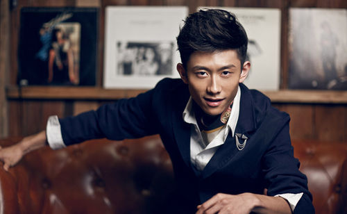

张一山，1992年5月出生于北京市东城区，毕业于北京电影学院，中国内地男演员。
2000年，张一山开始拍摄广告片，后被导演徐耿相中，出演首部电视剧作品《小兵张嘎》。2004年，因在少儿题材的情景喜剧《家有儿女》中饰演刘星后而被观众们熟知。2007年，获得腾讯星光大典年度潜力演艺新人奖[2] 。2009年，主演电影《寻找成龙》[3] 。2011年10月9日，张一山夺得《舞林大会》的冠军，后考入北京电影学院。2014年，主演的《食来孕转》与《老爸回家》播出。2016年，主演的刑侦网剧《余罪》第一、二季，再次得到好评；同年，出演战争剧《我的父亲我的兵》[4] ；同年5月，参与拍摄古装青春偶像剧《重耳传》。
| 中文名 | 张一山 | 出生日期 | 1992年5月5日 |
|---|---|---|---|
| 外文名 | Zray | 职业 | 演员 |
| 国籍 | 中国 | 毕业院校 | 北京电影学院 |
| 民族 | 汉族 | 经纪公司 | 北京华诚传媒有限公司 |
| 星座 | 金牛座 | 代表作品 | 家有儿女/余罪/我的父亲我的兵 |
| 血型 | B型 | 主要成就 | MTV超级盛典最具风格儿童演员奖 |
| 身高 | 176cm | 2007年星光大典年度潜力演艺新人奖 | |
| 体重 | 55kg | 2007年新周刊最深入人心的电视形象奖 | |
| 出生地 | 北京市东城区 | 第5届中国名人榜最具潜力奖 | |
| 2011星光版《舞林大会》总冠军 |
1992年5月5日，张一山出生在一个普通的家庭里。5岁时，去武术学校去学习武术。不知是因为爱好武术的爸爸的遗传还是因为习武有些副作用，上了小学的张一山总是在课堂上坐不住，同学们也给他起了一个外号叫“小猴子”。经老师推荐张一山进入儿童中心朗诵班学习，期间被导演看中出演其首部电视剧。随后进入什刹海武校学武五年[1]。
2003年，张一山被《小兵张嘎》的导演徐耿挑中，出演剧中的佟乐乐一角，虽然12岁的张一山在剧中的戏分并不多，但是这是他的首部电视剧作品[1] 。
2004年，由《小兵张嘎》中饰演“乐乐爸爸”的演员李迎旗推荐，张一山参加少儿题材的情景喜剧《家有儿女》的试镜，并成功获得饰演刘星这一角色的机会[7] ；同年，出演由黄海刚、杜信执导的都市爱情剧《谁为爱情买单》，在剧中饰演了一个“混世小魔王”，男主角大哥的儿子孔析析[8] 。
2005年，再次与高亚麟、宋丹丹、杨紫、尤浩然等人合作，继续出演少儿题材的情景喜剧《家有儿女》的续作《家有儿女2》。
2006年，继续主演《家有儿女》系列的第三部；同年，出演由宋业明、黄港执导的历史题材清装剧《船政风云》，饰演小苏阿哥[9] 。
2007年，出演《家有儿女4》继续饰演刘星一角，至此家有儿女系列四部作品完结[10] ；同年，出演由尚敬执导的情景喜剧《妙想天开》，饰演阿甘一角；同年，在《生于80后》之中饰演了一个十七岁的少年刘刀。因为父亲去世，不得不由父亲的小妻子安雯充当他的监护人，两个人互相看不顺眼，却意外地在磕磕绊绊之中酝酿出了亲情[11] 。
2008年，出演由林浩然执导的少年励志电影电影《扣篮对决》，在影片中饰演篮球队队员猴子，该片是张一山拍摄的首部电影作品[12] 。
2009年，与成龙共同主演儿童电影《寻找成龙》[3] ，张一山饰演了一个因喜爱武术而去寻找成龙学功夫的少年，该片所有武打戏份张一山均亲自完成，没有用替身；同年，与《家有儿女》原班人马共同出演儿童剧《不想长大》[13] 。
2010年，客串情景喜剧《圆圆的故事》；同年11月，文隽、叶伟民执导的功夫片《李小龙我的兄弟》上映，张一山在剧中饰演刘连光一角[14] 。
2011年7月，参加东方卫视综艺节目《舞林大会》，并在10月9日的决赛中获得冠军；同年9月，在为庆祝中国共产党建党九十周年而制的历史题材影片《建党伟业》中饰演中国共产党的创始人之一的邓恩铭[15] ；同年，参演灾难剧情片《南方大冰雪》饰演杨华华一角；同年与蒋小涵合作，出演剧情片《篮球公园》[16] 。
2012年6月，再度与杨紫合作，在电视剧《老爸回家》中饰演高贺；同年7月，出演首部时装剧《星光都市2》，在剧中饰演有梦想又有艺术气质的周浩；同年11月，参演讲述80后父母辈爱情故事的电视剧《最爱·你》[17] ；同年，参演都市爱情电影《三个未婚妈妈》；随后出演战争题材儿童剧《小小飞虎队》，该剧讲述了抗日战争时期小小飞虎队的故事[18] 。
2013年，客串出演电视剧版《失恋33天》；同年，主演由魏永刚执导的战争、励志、轻喜剧《大号小兵》[19] 。
2014年，在都市家庭轻喜剧《食来孕转》中饰演马瑞一角[20] ；同年，在军旅题材电视剧《大熔炉》中饰演虽然外表痞气，但内心真诚重情义、充满正义感的小士兵徐小斌[21-22] ；同年7月，参演青春励志喜剧电影《黄金福将》[23-24] ；10月，在电影《夺路而逃》中饰演男主角周晓易[25] 。
2015年1月，参演的抗日题材电视剧《杀寇决》在吉林卫视播出[26] ，张一山饰演男主角陆子铮[6] ；同年4月12日，加盟CCTV6青春益智真人秀《校花与学神》，并担任导师[27] ；11月，在网友投票评选出的“中国90后10大影响力人物”中，张一山排名第五[28] ；同年12月22日，与歌手丁丁共同主演的悬疑电影《隔离岛》正式杀青[29] 。
2016年，主演电视连续剧《我的父亲我的兵》[30] ；同年5月，主演的刑侦题材网剧《余罪》网络首播，张一山在剧中饰演一名刚从警校毕业就进入贩毒团伙中的卧底警察余罪，该剧播出半个月网络点击率超过4.5亿，并获得良好口碑[31] ；同年6月，主演古装青春偶像剧《重耳传》饰演夷吾[32] ；随后，主演的农村题材剧《青谷子》播出，张一山在剧中饰演焦大楼一角[33] ；同年8月，确定出演《余罪》系列网剧第三季，并曝出拍摄海报；随后，张一山搭档蔡文静出演由韩剧《Kill me heal me》改编的奇幻偶像剧《柒个我》[34] 。
| 公益类 | |
|---|---|
| 2014-11 | CCTV“点燃希望公益盛典”公益明星（获奖） |
| 2014-11 | 国家卫计委防艾校园行活动的“红丝带健康大使”（获奖） |
| 2012-03 | 中华环保形象大使选拔赛暨中华环保之星评比中华环保名誉形象大使（获奖） |
| 2008-04 | 福布斯中国名人慈善盛典最具潜力奖（获奖） |
| 表演类 | |
|---|---|
| 2007 | 东方卫视《舞林大会》总冠军（获奖） |
| 2007 | 星光大典年度潜力演艺新人奖（获奖） |
| 2007 | 新周刊最深入人心的电视形象奖（获奖） |
| 2007 | 第5届中国名人榜最具潜力奖（获奖） |
| 2006 | 第10届我最喜欢的儿童演员奖（获奖） |
| 2004 | MTV超级盛典最具风格儿童演员奖（获奖） |
张一山的表演是电视剧《余罪》中的亮点，他的表演不会不痛不痒也不会歇斯底里，而是与角色合为一体。他油嘴滑舌、痞气十足的表演演活了余罪那副被称为“贱人余”的模样。让人忘记了他是那个昔日在《家有儿女》中曾饰演过的鬼精灵刘星的人。（中国日报评）
看过张一山的表演，让人觉得，关于演员断代，青黄不接等类似的担心，都是多余的。（网易娱乐评）
张一山的演技好就好在真实，他能让人相信他演的角色就是他自己。这样的真实感也体现在他表演时的爆发力上。在面对同龄人、甚至比他还要年轻的演员，都在不断聚拢人气时，张一山依然淡定的选择磨炼自己的演技，以成为一个有演技的好演员为发展目标。（新华网评）
参考资料：张一山
2016年10月26日，Rosy.Han